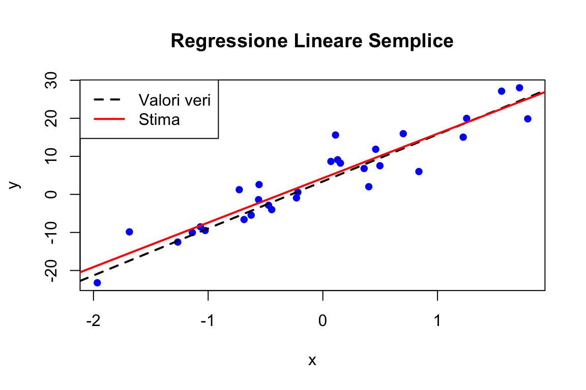

here::here("code", "_common.R") |>
source()
# Load packages
if (!requireNamespace("pacman")) install.packages("pacman")
pacman::p_load(readr)62 Elementi di algebra lineare
In questo capitolo imparerai a
Prerequisiti
Preparazione del Notebook
62.1 Introduzione
Questo capitolo presenta alcune nozioni di base dell’algebra lineare, una branca della matematica essenziale per la comprensione e l’analisi dei modelli di regressione lineare.
62.2 Rappresentazione dei Vettori
Nell’algebra lineare, un vettore, che rappresenta una lista ordinata di scalari, è solitamente indicato con una lettera minuscola in grassetto, come \(\mathbf{v}\). Gli elementi di un vettore sono generalmente indicati con un indice, ad esempio \(\mathbf{v}_1\) si riferisce al primo elemento del vettore \(\mathbf{v}\).
Un vettore \(\mathbf{v}\) di \(n\) elementi può essere rappresentato sia come una colonna che come una riga, a seconda della convenzione scelta. Ad esempio, un vettore colonna di \(n\) elementi è scritto come:
\[ \mathbf{v} = \begin{bmatrix} v_1 \\ v_2 \\ \vdots \\ v_n \end{bmatrix}, \]
mentre un vettore riga appare come:
\[ \mathbf{v} = \begin{bmatrix} v_1 & v_2 & \cdots & v_n \end{bmatrix}. \]
Questa notazione consente di visualizzare chiaramente i singoli elementi del vettore e di riferirsi a ciascuno di essi in modo specifico.
Una lista di \(n\) scalari organizzata in un vettore \(\mathbf{v}\) è chiamata “dimensione” del vettore. Formalmente, si esprime come \(\mathbf{v} \in \mathbb{R}^n\), indicando che il vettore \(\mathbf{v}\) appartiene all’insieme di tutti i vettori reali di dimensione \(n\).
62.3 Visualizzazione Geometrica dei Vettori
I vettori possono essere rappresentati come frecce in uno spazio \(n\)-dimensionale, con l’origine come punto di partenza e la punta della freccia che corrisponde alle coordinate specificate dal vettore. La norma \(L_2\) (o lunghezza) di un vettore, denotata come \(\|\mathbf{v}\|\), rappresenta la distanza euclidea dall’origine alla punta del vettore.
Per un vettore \(\mathbf{v} = [v_1, v_2, \ldots, v_n]\), la norma è definita come:
\[ \|\mathbf{v}\| = \sqrt{v_1^2 + v_2^2 + \cdots + v_n^2}. \]
62.3.1 Esempio Numerico
Consideriamo un vettore in uno spazio bidimensionale, ad esempio \(\mathbf{v} = [3, 4]\). Geometricamente, questo vettore parte dall’origine \((0, 0)\) e termina nel punto \((3, 4)\) del piano cartesiano.
Per calcolare la norma \(L_2\) di questo vettore, applichiamo la formula:
\[ \|\mathbf{v}\| = \sqrt{3^2 + 4^2} = \sqrt{9 + 16} = \sqrt{25} = 5. \]
Quindi, la norma del vettore \(\mathbf{v} = [3, 4]\) è 5, che rappresenta la lunghezza della freccia dal punto di origine \((0, 0)\) al punto \((3, 4)\) nello spazio bidimensionale.
62.3.2 Rappresentazione Geometrica
y
^
| * (3, 4)
| /
| /
| /
| /
| /
| /
|/____________> x
(0, 0)In questo diagramma, il punto * rappresenta la fine del vettore \(\mathbf{v}\) e la linea inclinata mostra il vettore stesso che parte dall’origine. L’altezza della linea fino al punto (3, 4) rappresenta visivamente la norma del vettore, che è la distanza di 5 unità dall’origine.
Questo esempio illustra chiaramente la relazione tra la rappresentazione numerica di un vettore e la sua interpretazione geometrica, facilitando la comprensione della lunghezza del vettore e della sua direzione nello spazio bidimensionale.
Sebbene noi siamo principalmente limitati a ragionare su spazi bidimensionali (2D) e tridimensionali (3D), i dati che raccogliamo spesso risiedono in spazi di dimensioni superiori. L’algebra lineare permette di ragionare e sviluppare intuizioni su vettori e spazi di dimensioni molto più elevate, superando i limiti della visualizzazione diretta.
62.4 Operazioni di Base sui Vettori
62.4.1 1. Moltiplicazione di un Vettore per uno Scalare
La moltiplicazione di un vettore per uno scalare produce un nuovo vettore. Questa operazione può essere interpretata come una “scalatura” del vettore nello spazio: il vettore risultante mantiene la stessa direzione dell’originale, ma la sua lunghezza viene modificata in base allo scalare.
Se \(\mathbf{v} = [v_1, v_2, \ldots, v_n]\) è un vettore e \(c\) è uno scalare, la moltiplicazione del vettore per lo scalare è data da:
\[ c\mathbf{v} = [cv_1, cv_2, \ldots, cv_n] \]
62.4.2 2. Addizione di Vettori
È possibile sommare due vettori della stessa dimensione. La somma vettoriale si ottiene sommando gli elementi corrispondenti di ciascun vettore.
Se \(\mathbf{u} = [u_1, u_2, \ldots, u_n]\) e \(\mathbf{v} = [v_1, v_2, \ldots, v_n]\) sono due vettori di dimensione \(n\), la loro somma è:
\[ \mathbf{u} + \mathbf{v} = [u_1 + v_1, u_2 + v_2, \ldots, u_n + v_n] \]
62.4.3 3. Prodotto Scalare (o Prodotto Interno)
Il prodotto scalare tra due vettori della stessa dimensione è uno scalare che fornisce informazioni sull’angolo tra i vettori nello spazio. Formalmente, il prodotto scalare di \(\mathbf{u} = [u_1, u_2, \ldots, u_n]\) e \(\mathbf{v} = [v_1, v_2, \ldots, v_n]\) è definito come:
\[ \mathbf{u} \cdot \mathbf{v} = u_1v_1 + u_2v_2 + \cdots + u_nv_n \]
Questo prodotto scalare può anche essere espresso in termini dell’angolo \(\theta\) tra i vettori:
\[ \mathbf{u} \cdot \mathbf{v} = \|\mathbf{u}\| \|\mathbf{v}\| \cos(\theta) \]
Se due vettori sono ortogonali, ovvero formano un angolo di \(90^\circ\) tra loro, il loro prodotto scalare è zero: \(\mathbf{u} \cdot \mathbf{v} = 0\).
62.4.4 4. Prodotto Scalare di un Vettore con Se Stesso
Il prodotto scalare di un vettore con se stesso fornisce il quadrato della sua lunghezza. Se \(\mathbf{v} = [v_1, v_2, \ldots, v_n]\), allora:
\[ \mathbf{v} \cdot \mathbf{v} = v_1^2 + v_2^2 + \cdots + v_n^2 = \|\mathbf{v}\|^2 \]
Queste operazioni di base sui vettori sono fondamentali per molte applicazioni in matematica, fisica, informatica e altre scienze, fornendo una struttura potente per analizzare e risolvere problemi in spazi multidimensionali.
62.4.5 Vettori in R
In R, possiamo creare un vettore con tre elementi usando la funzione c():
# Creazione di un vettore
v <- c(1, 2, 3)
v
#> [1] 1 2 3In questo esempio, v è un vettore con tre elementi: 1, 2 e 3.
Per eseguire il prodotto tra un vettore e uno scalare, possiamo semplicemente moltiplicare il vettore per lo scalare. Questo moltiplica ogni elemento del vettore per lo scalare:
# Scalari e vettori
a <- 5
# Prodotto vettore-scalare
va <- v * a
va
#> [1] 5 10 15Il risultato sarà [5, 10, 15].
Il prodotto interno (o prodotto scalare) tra due vettori si può calcolare con la funzione sum() per ottenere la somma dei prodotti degli elementi corrispondenti:
# Un altro vettore
v2 <- c(4, 5, 6)
# Prodotto interno
prodotto_interno <- sum(v * v2)
prodotto_interno
#> [1] 32Il risultato sarà 32, dato che il prodotto interno è calcolato come \(1*4 + 2*5 + 3*6 = 32\).
In alternativa, si può utilizzare la funzione crossprod() che calcola il prodotto interno in modo efficiente:
# Prodotto interno con crossprod
prodotto_interno2 <- crossprod(v, v2)
prodotto_interno2
#> [,1]
#> [1,] 32La funzione crossprod() restituisce una matrice \(1 \times 1\), quindi il risultato sarà simile.
Il prodotto esterno tra due vettori produce una matrice dove ogni elemento è il prodotto degli elementi corrispondenti dei due vettori. In R, possiamo usare la funzione outer():
# Prodotto esterno
prodotto_esterno <- outer(v, v2)
prodotto_esterno
#> [,1] [,2] [,3]
#> [1,] 4 5 6
#> [2,] 8 10 12
#> [3,] 12 15 18Il risultato sarà una matrice in cui ogni elemento è il prodotto dei corrispondenti elementi dei vettori v e v2.
62.5 Matrici
Una matrice è una struttura matematica bidimensionale costituita da elementi disposti in righe e colonne. Formalmente, una matrice \(\mathbf{A}\) di dimensioni \(m \times n\) (si legge “m per n”) è un array rettangolare di numeri reali o complessi, denotato come:
\[ \mathbf{A} = (a_{ij})_{m \times n} = \begin{bmatrix} a_{11} & a_{12} & \cdots & a_{1n} \\ a_{21} & a_{22} & \cdots & a_{2n} \\ \vdots & \vdots & \ddots & \vdots \\ a_{m1} & a_{m2} & \cdots & a_{mn} \end{bmatrix} \]
dove \(a_{ij}\) rappresenta l’elemento nella \(i\)-esima riga e \(j\)-esima colonna della matrice.
Le matrici sono comunemente indicate con lettere maiuscole in grassetto, come \(\mathbf{A}\), \(\mathbf{B}\), \(\mathbf{C}\), etc. Una matrice con \(m\) righe e \(n\) colonne si dice di ordine \(m \times n\).
In molte matrici di dati, ogni elemento \(a_{ij}\) è uno scalare che rappresenta il valore della \(j\)-esima variabile del \(i\)-esimo campione. Formalmente, possiamo indicare \(\mathbf{A} \in \mathbb{R}^{m \times n}\), il che significa che la matrice \(\mathbf{A}\) ha \(m\) righe e \(n\) colonne. Si dice comunemente che la “dimensione” di \(\mathbf{A}\) è \(m \times n\).
62.5.1 Matrici come Collezioni di Vettori Colonna
Le matrici possono essere interpretate come collezioni di vettori colonna. Ad esempio, una matrice di dati può essere rappresentata come:
\[ \mathbf{A} = \begin{bmatrix} \mathbf{a}_1 & \mathbf{a}_2 & \cdots & \mathbf{a}_n \end{bmatrix} \]
In questo caso, \(\mathbf{A}\) è composta da una sequenza di \(n\) vettori colonna \(\mathbf{a}_1, \mathbf{a}_2, \ldots, \mathbf{a}_n\), ciascuno dei quali è un vettore di dimensione \(m\). Più precisamente, ogni vettore colonna \(\mathbf{a}_j\) rappresenta i dati di tutti i campioni per la \(j\)-esima variabile o feature.
62.5.2 Matrici come Collezioni di Vettori Riga
In alternativa, una matrice può essere vista come una collezione di vettori riga. In questo contesto, ogni riga di \(\mathbf{A}\) rappresenta tutte le variabili misurate per un dato campione:
\[ \mathbf{A} = \begin{bmatrix} \mathbf{a}_1^T \\ \mathbf{a}_2^T \\ \vdots \\ \mathbf{a}_m^T \end{bmatrix} \]
Qui, la matrice \(\mathbf{A}\) è composta da \(m\) vettori riga, denotati come \(\mathbf{a}_i^T\). Ognuno di questi vettori riga \(\mathbf{a}_i^T\) è di dimensione \(n\), indicando che ciascun campione ha \(n\) variabili o feature associate.
62.5.3 Trasposta di una Matrice
Il simbolo \(T\) rappresenta la trasposta di una matrice. La trasposta di una matrice, denotata con un apice \(T\) (es. \(\mathbf{A}^T\)), è un’operazione che trasforma ciascuna delle righe di \(\mathbf{A}\) in colonne di \(\mathbf{A}^T\). In altre parole, se \(\mathbf{A}\) ha dimensione \(m \times n\), allora \(\mathbf{A}^T\) avrà dimensione \(n \times m\):
\[ \mathbf{A}^T = \begin{bmatrix} a_{11} & a_{21} & \cdots & a_{m1} \\ a_{12} & a_{22} & \cdots & a_{m2} \\ \vdots & \vdots & \ddots & \vdots \\ a_{1n} & a_{2n} & \cdots & a_{mn} \end{bmatrix} \]
Con la trasposta, le variabili misurate diventano colonne e i campioni diventano righe. Essenzialmente, i vettori riga sono le trasposte dei vettori colonna. Questo concetto è molto utile in algebra lineare, poiché permette di passare facilmente da una rappresentazione dei dati a un’altra.
62.5.4 Matrici in R
In R, una matrice può essere creata utilizzando la funzione matrix(). Per esempio, possiamo creare una matrice 3x4 fornendo un vettore di elementi e specificando il numero di righe e colonne.
Ecco come definire una matrice 3x4:
# Definizione della matrice 3x4
M <- matrix(c(
1, 2, 3, 4,
5, 6, 7, 8,
9, 10, 11, 12
),
nrow = 3, ncol = 4, byrow = TRUE)
print("Matrice originale:")
#> [1] "Matrice originale:"
print(M)
#> [,1] [,2] [,3] [,4]
#> [1,] 1 2 3 4
#> [2,] 5 6 7 8
#> [3,] 9 10 11 12Qui, byrow = TRUE indica che i dati vengono inseriti riga per riga. Se si utilizza byrow = FALSE, i dati vengono inseriti colonna per colonna.
In R, puoi calcolare la trasposta di una matrice utilizzando la funzione t():
# Calcolo della trasposta
trasposta <- t(M)
trasposta
#> [,1] [,2] [,3]
#> [1,] 1 5 9
#> [2,] 2 6 10
#> [3,] 3 7 11
#> [4,] 4 8 1262.6 Moltiplicazione tra Matrici
La moltiplicazione tra matrici è un’operazione fondamentale nell’algebra lineare. Per poter moltiplicare due matrici, è necessario che siano conformabili, il che significa che il numero di colonne della prima matrice deve essere uguale al numero di righe della seconda matrice.
Se abbiamo una matrice \(\mathbf{A}\) di dimensioni \(m \times n\) (cioè, \(m\) righe e \(n\) colonne) e una matrice \(\mathbf{B}\) di dimensioni \(n \times p\) (cioè, \(n\) righe e \(p\) colonne), allora il prodotto delle due matrici \(\mathbf{A} \mathbf{B}\) sarà una matrice \(\mathbf{C}\) di dimensioni \(m \times p\).
Il prodotto tra due matrici \(\mathbf{A}\) e \(\mathbf{B}\) si ottiene calcolando il prodotto interno tra le righe della prima matrice e le colonne della seconda matrice.
Per ciascun elemento \(c_{ij}\) della matrice risultante \(\mathbf{C}\), si esegue il seguente calcolo:
\[ c_{ij} = \sum_{k=1}^{n} a_{ik} b_{kj}. \]
Questo significa che l’elemento \(c_{ij}\) è il risultato del prodotto interno tra la \(i\)-esima riga della matrice \(\mathbf{A}\) e la \(j\)-esima colonna della matrice \(\mathbf{B}\).
La moltiplicazione di una matrice per un vettore è un caso particolare della moltiplicazione tra matrici, dove il vettore può essere visto come una matrice con una delle dimensioni uguale a 1.
Se \(\mathbf{A}\) è una matrice \(m \times n\) e \(\mathbf{x}\) è un vettore di dimensione \(n\) (cioè una matrice di dimensione \(n \times 1\)), allora il prodotto \(\mathbf{A} \mathbf{x}\) è un vettore di dimensione \(m\). Ogni elemento del vettore risultante è il prodotto interno tra una riga della matrice \(\mathbf{A}\) e il vettore \(\mathbf{x}\).
Consideriamo le seguenti matrici:
\[ \mathbf{A} = \begin{bmatrix} 1 & 2 & 3 \\ 4 & 5 & 6 \end{bmatrix}, \quad \mathbf{B} = \begin{bmatrix} 7 & 8 \\ 9 & 10 \\ 11 & 12 \end{bmatrix} \]
- \(\mathbf{A}\) è una matrice \(2 \times 3\).
- \(\mathbf{B}\) è una matrice \(3 \times 2\).
Il prodotto \(\mathbf{A} \mathbf{B}\) è una matrice \(2 \times 2\) calcolata come segue:
\[ \mathbf{C} = \mathbf{A} \mathbf{B} = \begin{bmatrix} (1 \cdot 7 + 2 \cdot 9 + 3 \cdot 11) & (1 \cdot 8 + 2 \cdot 10 + 3 \cdot 12) \\ (4 \cdot 7 + 5 \cdot 9 + 6 \cdot 11) & (4 \cdot 8 + 5 \cdot 10 + 6 \cdot 12) \end{bmatrix} \]
Calcolando ogni elemento:
\[ \mathbf{C} = \begin{bmatrix} 58 & 64 \\ 139 & 154 \end{bmatrix} \]
In questo esempio, ogni elemento della matrice risultante \(\mathbf{C}\) è stato ottenuto calcolando il prodotto interno tra le righe di \(\mathbf{A}\) e le colonne di \(\mathbf{B}\).
62.6.1 Calcoli con Matrici in R
In R, il prodotto tra matrici può essere calcolato utilizzando l’operatore %*%.
# Definizione della matrice A (2x3)
A <- matrix(c(1, 2, 3, 4, 5, 6), nrow = 2, ncol = 3, byrow = TRUE)
# Definizione della matrice B (3x2)
B <- matrix(c(7, 8, 9, 10, 11, 12), nrow = 3, ncol = 2, byrow = TRUE)
# Calcolo del prodotto A * B
prodotto_AB <- A %*% B
print("Prodotto A * B usando l'operatore %*%:")
#> [1] "Prodotto A * B usando l'operatore %*%:"
prodotto_AB
#> [,1] [,2]
#> [1,] 58 64
#> [2,] 139 154In R, %*% è l’operatore per il prodotto matriciale.
62.6.2 Matrice Identità e Matrice Inversa
62.6.3 Matrice Identità
La matrice identità, denotata come \(\mathbf{I}_n\), è una matrice quadrata di dimensione \(n \times n\) con tutti gli elementi sulla diagonale principale uguali a 1 e tutti gli altri elementi uguali a 0. Ad esempio, una matrice identità 3x3 è:
\[ \mathbf{I}_3 = \begin{bmatrix} 1 & 0 & 0 \\ 0 & 1 & 0 \\ 0 & 0 & 1 \end{bmatrix} \]
In generale, una matrice identità di dimensione \(n \times n\) è:
\[ \mathbf{I}_n = \begin{bmatrix} 1 & 0 & \cdots & 0 \\ 0 & 1 & \cdots & 0 \\ \vdots & \vdots & \ddots & \vdots \\ 0 & 0 & \cdots & 1 \end{bmatrix} \]
La matrice identità ha la proprietà fondamentale di essere l’elemento neutro per la moltiplicazione matriciale. Per qualsiasi matrice \(\mathbf{A}\) di dimensioni \(n \times n\):
\[ \mathbf{A} \mathbf{I}_n = \mathbf{A} \quad \text{e} \quad \mathbf{I}_n \mathbf{A} = \mathbf{A}. \]
In R, puoi creare una matrice identità utilizzando la funzione diag():
# Creazione della matrice identità 3x3
I <- diag(3)
print("Matrice identità 3x3:")
#> [1] "Matrice identità 3x3:"
print(I)
#> [,1] [,2] [,3]
#> [1,] 1 0 0
#> [2,] 0 1 0
#> [3,] 0 0 1La funzione diag(3) crea una matrice identità 3x3 con 1 lungo la diagonale principale e 0 altrove.
62.6.4 Determinante di una Matrice
Il determinante è un numero associato a una matrice quadrata che fornisce informazioni essenziali sulle proprietà della matrice stessa. È uno scalare che può indicare se una matrice è invertibile, se un sistema di equazioni lineari ha una soluzione unica, e molto altro.
Il determinante di una matrice può essere interpretato in diversi modi:
In termini geometrici, il determinante di una matrice \(2 \times 2\) o \(3 \times 3\) rappresenta rispettivamente l’area o il volume del parallelogramma o del parallelepipedo definito dai vettori delle righe (o colonne) della matrice. Un determinante pari a zero indica che i vettori sono linearmente dipendenti e che l’area o il volume è nullo, suggerendo che la matrice non ha un’inversa.
Algebraicamente, il determinante di una matrice quadrata può dirci se la matrice è invertibile. Se il determinante è diverso da zero, la matrice è invertibile, cioè esiste una matrice inversa tale che il prodotto delle due sia la matrice identità. Se il determinante è zero, la matrice non è invertibile.
Nel contesto dei sistemi di equazioni lineari, se il determinante del coefficiente della matrice associata a un sistema è zero, il sistema può non avere soluzioni o avere un numero infinito di soluzioni. Se è diverso da zero, il sistema ha una soluzione unica.
62.6.4.1 Calcolo del Determinante per una Matrice 2x2
Per una matrice \(2 \times 2\):
\[ \mathbf{A} = \begin{bmatrix} a & b \\ c & d \end{bmatrix} \]
il determinante è calcolato come:
\[ \det(\mathbf{A}) = ad - bc \]
Questo semplice calcolo deriva dalla differenza tra il prodotto degli elementi della diagonale principale (dall’angolo superiore sinistro all’angolo inferiore destro) e il prodotto degli elementi della diagonale secondaria (dall’angolo superiore destro all’angolo inferiore sinistro).
62.6.4.2 Calcolo del Determinante per Matrici di Dimensioni Superiori
Per matrici di dimensioni superiori a \(2 \times 2\), il calcolo del determinante diventa più complesso. Un metodo comune per calcolare il determinante di matrici più grandi è l’espansione di Laplace o espansione per cofattori. Questo metodo si basa sulla ricorsione, calcolando il determinante attraverso una somma pesata di determinanti di matrici più piccole (minori) che si ottengono eliminando una riga e una colonna dalla matrice originale.
62.6.5 Calcolo del Determinante in R
Per calcolare il determinante di una matrice quadrata in R, puoi usare la funzione det(). Questa funzione funziona per matrici quadrate di qualsiasi dimensione.
62.6.5.1 Esempio con una matrice \(2 \times 2\)
# Definizione di una matrice 2x2
A <- matrix(c(1, 2, 3, 4), nrow = 2, ncol = 2, byrow = TRUE)
# Calcolo del determinante
determinante_A <- det(A)
determinante_A
#> [1] -262.6.5.2 Esempio con una matrice \(3 \times 3\)
# Definizione di una matrice 3x3
B <- matrix(c(6, 1, 1, 4, -2, 5, 2, 8, 7), nrow = 3, ncol = 3, byrow = TRUE)
# Calcolo del determinante
determinante_B <- det(B)
determinante_B
#> [1] -306In R, come in Python, il determinante è uno strumento fondamentale per comprendere le proprietà di una matrice. Può essere utilizzato per determinare:
- Invertibilità: Se il determinante è \(0\), la matrice non è invertibile.
- Trasformazioni geometriche: Il valore del determinante descrive il fattore di scala della trasformazione rappresentata dalla matrice.
- Sistemi lineari: Il determinante aiuta a identificare la singolarità dei sistemi di equazioni.
62.6.6 Inversa di una Matrice
L’inversa di una matrice quadrata \(\mathbf{A}\), denotata come \(\mathbf{A}^{-1}\), è una matrice che, moltiplicata per \(\mathbf{A}\), restituisce la matrice identità \(\mathbf{I}_n\). L’inversa di una matrice esiste solo per matrici quadrate non singolari, ovvero matrici il cui determinante è diverso da zero.
La proprietà fondamentale dell’inversa è:
\[ \mathbf{A} \mathbf{A}^{-1} = \mathbf{I}_n \quad \text{e} \quad \mathbf{A}^{-1} \mathbf{A} = \mathbf{I}_n. \]
dove \(\mathbf{I}_n\) è la matrice identità di dimensione \(n \times n\).
62.6.6.1 Esempio: Calcolo dell’Inversa di una Matrice \(2 \times 2\)
Per una matrice \(2 \times 2\):
\[ \mathbf{A} = \begin{bmatrix} a & b \\ c & d \end{bmatrix} \]
l’inversa, se esiste, è data dalla formula:
\[ \mathbf{A}^{-1} = \frac{1}{ad-bc} \begin{bmatrix} d & -b \\ -c & a \end{bmatrix} \]
dove \(ad-bc\) è il determinante della matrice \(\mathbf{A}\). L’inversa esiste solo se questo determinante è diverso da zero (cioè, se \(\mathbf{A}\) è non singolare).
62.6.7 Utilizzo dell’Inversa di una Matrice
L’inversa di una matrice è particolarmente utile per risolvere sistemi di equazioni lineari. Ad esempio, consideriamo un sistema rappresentato in forma matriciale come \(\mathbf{A} \mathbf{x} = \mathbf{b}\), dove \(\mathbf{A}\) è la matrice dei coefficienti, \(\mathbf{x}\) è il vettore delle variabili incognite e \(\mathbf{b}\) è il vettore dei termini noti.
Se \(\mathbf{A}\) è una matrice invertibile, possiamo risolvere per \(\mathbf{x}\) moltiplicando entrambi i lati dell’equazione per \(\mathbf{A}^{-1}\):
\[ \mathbf{A}^{-1} \mathbf{A} \mathbf{x} = \mathbf{A}^{-1} \mathbf{b}. \]
Poiché \(\mathbf{A}^{-1} \mathbf{A} = \mathbf{I}\), otteniamo:
\[ \mathbf{I} \mathbf{x} = \mathbf{A}^{-1} \mathbf{b}, \]
\[ \mathbf{x} = \mathbf{A}^{-1} \mathbf{b}. \]
Questa proprietà è utile anche per altre applicazioni, come nella derivazione della formula per i coefficienti della regressione lineare.
Ecco come calcolare l’inversa di una matrice in R utilizzando la funzione solve():
62.6.8 Calcolo dell’Inversa in R
In R, possiamo calcolare l’inversa di una matrice quadrata (se invertibile) utilizzando la funzione solve(). È importante verificare che la matrice abbia un determinante diverso da zero, altrimenti non è invertibile.
# Definizione di una matrice 2x2
A <- matrix(c(1, 2, 3, 4), nrow = 2, ncol = 2, byrow = TRUE)
# Calcolo dell'inversa
A_inv <- solve(A)
cat("Inversa di A:\n")
#> Inversa di A:
print(A_inv)
#> [,1] [,2]
#> [1,] -2.0 1.0
#> [2,] 1.5 -0.5Per verificare che l’inversa sia stata calcolata correttamente, possiamo moltiplicare la matrice originale \(\mathbf{A}\) per la sua inversa \(\mathbf{A}^{-1}\) e verificare che il risultato sia la matrice identità:
# Prodotto di A e A_inv
identita <- A %*% A_inv
cat("Prodotto di A e A_inv (matrice identità):\n")
#> Prodotto di A e A_inv (matrice identità):
print(identita)
#> [,1] [,2]
#> [1,] 1 1.11e-16
#> [2,] 0 1.00e+00In conclusione, l’inversa di una matrice è uno strumento potente e utile per diverse applicazioni, come:
- Risoluzione di sistemi di equazioni lineari
- Trasformazioni geometriche
- Analisi di modelli lineari
In R, solve() rende semplice e veloce il calcolo dell’inversa, a patto che la matrice sia:
- Quadrata: Deve avere lo stesso numero di righe e colonne.
- Invertibile: Il determinante della matrice deve essere diverso da zero, altrimenti
solve()restituirà un errore.
62.7 Regressione Lineare e Stima dei Coefficienti
La regressione lineare è una tecnica statistica utilizzata per modellare la relazione tra una variabile dipendente (o risposta) e una o più variabili indipendenti (o predittori). È possibile rappresentare questo modello in termini di algebra matriciale per semplificare il calcolo dei coefficienti.
62.7.1 Regressione Lineare Semplice
La regressione lineare semplice descrive una relazione lineare tra una variabile indipendente \(x\) e una variabile dipendente \(y\). Quando abbiamo un campione di \(n\) osservazioni, il modello assume la seguente forma:
\[ y_i = \beta_0 + \beta_1 x_i + e_i, \quad \text{per} \; i = 1, 2, \ldots, n, \]
dove:
- \(y_i\) è il valore osservato della variabile dipendente per l’osservazione \(i\),
- \(\beta_0\) è l’intercetta, che rappresenta il valore di \(y\) quando \(x = 0\),
- \(\beta_1\) è il coefficiente di regressione, che indica quanto varia \(y\) per una variazione unitaria di \(x\),
- \(x_i\) è il valore della variabile indipendente per l’osservazione \(i\),
- \(e_i\) è l’errore o residuo per l’osservazione \(i\), rappresenta la differenza tra il valore osservato \(y_i\) e il valore previsto \(\hat{y}_i = \beta_0 + \beta_1 x_i\).
Per un campione di \(n\) osservazioni, possiamo rappresentare la regressione lineare in forma matriciale, che rende il modello più compatto e facilita i calcoli statistici. La rappresentazione matriciale del modello di regressione lineare è:
\[ \mathbf{y} = \mathbf{Xb} + \mathbf{e}, \]
dove:
- \(\mathbf{y} = \begin{bmatrix} y_1 \\ y_2 \\ \vdots \\ y_n \end{bmatrix}\) è il vettore delle osservazioni della variabile dipendente,
- \(\mathbf{X} = \begin{bmatrix} 1 & x_1 \\ 1 & x_2 \\ \vdots & \vdots \\ 1 & x_n \end{bmatrix}\) è la matrice di design, in cui la prima colonna è costituita da 1 per includere l’intercetta \(\beta_0\),
- \(\mathbf{b} = \begin{bmatrix} \beta_0 \\ \beta_1 \end{bmatrix}\) è il vettore dei coefficienti del modello,
- \(\mathbf{e} = \begin{bmatrix} e_1 \\ e_2 \\ \vdots \\ e_n \end{bmatrix}\) è il vettore degli errori o residui.
Questa forma matriciale sintetizza tutte le \(n\) equazioni del modello di regressione lineare semplice in un’unica espressione compatta, che rappresenta la relazione tra le osservazioni della variabile dipendente \(y\) e le corrispondenti osservazioni della variabile indipendente \(x\), tenendo conto degli errori di previsione.
62.7.2 Regressione Lineare Multipla
La regressione lineare multipla estende la regressione lineare semplice includendo più variabili indipendenti, consentendo di modellare la relazione tra una variabile dipendente e diverse variabili indipendenti. Il modello di regressione lineare multipla per un campione di \(n\) osservazioni con \(p\) variabili indipendenti può essere scritto come:
\[ y_i = \beta_0 + \beta_1 x_{i1} + \beta_2 x_{i2} + \cdots + \beta_p x_{ip} + e_i, \quad \text{per} \; i = 1, 2, \ldots, n, \]
dove:
- \(y_i\) è il valore osservato della variabile dipendente per l’osservazione \(i\),
- \(\beta_0\) è l’intercetta del modello,
- \(\beta_1, \beta_2, \ldots, \beta_p\) sono i coefficienti di regressione associati alle variabili indipendenti,
- \(x_{i1}, x_{i2}, \ldots, x_{ip}\) sono i valori delle variabili indipendenti per l’osservazione \(i\),
- \(e_i\) è l’errore o residuo per l’osservazione \(i\), che rappresenta la differenza tra il valore osservato \(y_i\) e il valore previsto \(\hat{y}_i = \beta_0 + \beta_1 x_{i1} + \beta_2 x_{i2} + \cdots + \beta_p x_{ip}\).
In termini matriciali, il modello di regressione lineare multipla può essere scritto come:
\[ \mathbf{y} = \mathbf{Xb} + \mathbf{e}, \]
dove:
- \(\mathbf{y} = \begin{bmatrix} y_1 \\ y_2 \\ \vdots \\ y_n \end{bmatrix}\) è il vettore delle osservazioni della variabile dipendente, di dimensione \(n \times 1\),
- \(\mathbf{X} = \begin{bmatrix} 1 & x_{11} & x_{12} & \cdots & x_{1p} \\ 1 & x_{21} & x_{22} & \cdots & x_{2p} \\ \vdots & \vdots & \vdots & \ddots & \vdots \\ 1 & x_{n1} & x_{n2} & \cdots & x_{np} \end{bmatrix}\) è la matrice di design, di dimensione \(n \times (p+1)\), dove la prima colonna è composta da 1 per includere l’intercetta \(\beta_0\),
- \(\mathbf{b} = \begin{bmatrix} \beta_0 \\ \beta_1 \\ \beta_2 \\ \vdots \\ \beta_p \end{bmatrix}\) è il vettore dei coefficienti, di dimensione \((p+1) \times 1\),
- \(\mathbf{e} = \begin{bmatrix} e_1 \\ e_2 \\ \vdots \\ e_n \end{bmatrix}\) è il vettore degli errori o residui, di dimensione \(n \times 1\).
L’equazione in forma matriciale esplicita per il campione di \(n\) osservazioni con \(p\) variabili indipendenti è:
\[ \begin{bmatrix} y_1 \\ y_2 \\ \vdots \\ y_n \end{bmatrix} = \begin{bmatrix} 1 & x_{11} & x_{12} & \cdots & x_{1p} \\ 1 & x_{21} & x_{22} & \cdots & x_{2p} \\ \vdots & \vdots & \vdots & \ddots & \vdots \\ 1 & x_{n1} & x_{n2} & \cdots & x_{np} \end{bmatrix} \begin{bmatrix} \beta_0 \\ \beta_1 \\ \beta_2 \\ \vdots \\ \beta_p \end{bmatrix} + \begin{bmatrix} e_1 \\ e_2 \\ \vdots \\ e_n \end{bmatrix}. \]
In questa rappresentazione:
- Il prodotto \(\mathbf{Xb}\) rappresenta i valori previsti (o stimati) del modello come combinazione lineare delle colonne della matrice di design \(\mathbf{X}\), ponderata dai coefficienti \(\mathbf{b}\).
- Il vettore \(\mathbf{e}\) rappresenta gli errori o residui, che sono le differenze tra i valori osservati \(\mathbf{y}\) e i valori previsti \(\mathbf{Xb}\).
Questa forma compatta e ordinata consente un’efficiente analisi statistica e facilita i calcoli necessari per stimare i coefficienti del modello di regressione.
62.8 Stima dei Coefficienti con il Metodo dei Minimi Quadrati
Per ogni osservazione \(i\), l’errore (o residuo) è definito come la differenza tra il valore osservato \(y_i\) e il valore predetto \(\hat{y}_i\) dal modello:
\[ e_i = y_i - \hat{y}_i, \]
dove:
- \(y_i\) è il valore osservato dell’output per l’osservazione \(i\),
- \(\hat{y}_i\) è il valore predetto dal modello per l’osservazione \(i\).
In forma matriciale, possiamo rappresentare l’errore per tutte le \(n\) osservazioni come segue:
\[ \mathbf{e} = \mathbf{y} - \hat{\mathbf{y}}, \]
dove:
- \(\mathbf{e} = \begin{bmatrix} e_1 \\ e_2 \\ \vdots \\ e_n \end{bmatrix}\) è il vettore degli errori o residui,
- \(\mathbf{y} = \begin{bmatrix} y_1 \\ y_2 \\ \vdots \\ y_n \end{bmatrix}\) è il vettore delle osservazioni della variabile dipendente,
- \(\hat{\mathbf{y}} = \begin{bmatrix} \hat{y}_1 \\ \hat{y}_2 \\ \vdots \\ \hat{y}_n \end{bmatrix} = \mathbf{Xb}\) è il vettore dei valori predetti dal modello.
L’equazione matriciale esplicita per il vettore degli errori \(\mathbf{e}\) è quindi:
\[ \mathbf{e} = \mathbf{y} - \mathbf{Xb}. \]
Questa equazione mostra che il vettore degli errori \(\mathbf{e}\) è la differenza tra il vettore delle osservazioni \(\mathbf{y}\) e il vettore dei valori predetti \(\hat{\mathbf{y}} = \mathbf{Xb}\). In altre parole, ogni elemento \(e_i\) del vettore degli errori rappresenta la differenza tra il valore osservato \(y_i\) e il valore predetto \(\hat{y}_i\) per l’osservazione \(i\).
L’obiettivo della regressione lineare è minimizzare la somma degli errori quadrati (\(SSE\), Sum of Squared Errors) per tutte le osservazioni. Questa somma è data da:
\[ \text{SSE} = \sum_{i=1}^m e_i^2 = \sum_{i=1}^m (y_i - \hat{y}_i)^2. \]
Utilizzando la notazione matriciale, possiamo esprimere la somma degli errori quadrati come:
\[ \text{SSE} = \mathbf{e}^T \mathbf{e} = (\mathbf{y} - \mathbf{X} \mathbf{b})^T (\mathbf{y} - \mathbf{X} \mathbf{b}). \]
Il problema di ottimizzazione per minimizzare la somma degli errori quadrati si traduce in:
\[ \min_{\mathbf{b}} (\mathbf{y} - \mathbf{X} \mathbf{b})^T (\mathbf{y} - \mathbf{X} \mathbf{b}), \]
dove:
- \(\mathbf{b}\) è il vettore dei coefficienti da stimare.
- \(\mathbf{X}\) è la matrice di design che include tutte le osservazioni delle variabili indipendenti.
- \(\mathbf{y}\) è il vettore delle osservazioni della variabile dipendente.
Per trovare i coefficienti ottimali \(\mathbf{b}\), calcoliamo la derivata parziale dell’errore quadratico totale rispetto a \(\mathbf{b}\) e la impostiamo a zero:
\[ \frac{\partial}{\partial \mathbf{b}} (\mathbf{y} - \mathbf{X} \mathbf{b})^T (\mathbf{y} - \mathbf{X} \mathbf{b}) = -2 \mathbf{X}^T (\mathbf{y} - \mathbf{X} \mathbf{b}). \]
Impostando questa derivata uguale a zero, otteniamo:
\[ -2 \mathbf{X}^T (\mathbf{y} - \mathbf{X} \mathbf{b}) = 0. \]
Semplificando, possiamo riscrivere l’equazione come:
\[ \mathbf{X}^T \mathbf{y} = \mathbf{X}^T \mathbf{X} \mathbf{b}. \]
Assumendo che la matrice \(\mathbf{X}^T \mathbf{X}\) sia invertibile, risolviamo per \(\mathbf{b}\):
\[ \mathbf{b} = (\mathbf{X}^T \mathbf{X})^{-1} \mathbf{X}^T \mathbf{y}. \]
Per gli scopi presenti, non è necessario comprendere la derivazione formale in dettaglio. Tuttavia, possiamo fare un parallelo con il metodo dei minimi quadrati per il caso univariato per ottenere un’intuizione geometrica su cosa stiamo facendo.
Nel caso della regressione lineare semplice (univariata), minimizzare la somma degli errori quadrati significa trovare la retta che meglio si adatta ai dati in uno spazio bidimensionale (2D). Dal punto di vista geometrico, questo processo equivale a calcolare la derivata della funzione di errore rispetto ai coefficienti della retta, quindi impostando la derivata a zero per trovare il punto in cui la pendenza della tangente è piatta. In altre parole, cerchiamo il punto in cui la pendenza della funzione di errore è zero, che corrisponde a un minimo della funzione.
Nel caso della regressione lineare multipla, invece di lavorare in uno spazio bidimensionale, stiamo operando in uno spazio multidimensionale. Ogni dimensione aggiuntiva rappresenta una variabile indipendente (regressore) nel nostro modello. Quando prendiamo la derivata dell’errore quadratico totale rispetto ai coefficienti \(\mathbf{b}\) e la impostiamo a zero, stiamo essenzialmente cercando il punto in questo spazio multidimensionale in cui tutte le “pendenze” (derivate parziali) sono zero. Questo punto rappresenta il minimo dell’errore quadratico totale e corrisponde alla migliore stima dei coefficienti del nostro modello di regressione lineare, minimizzando l’errore di previsione su tutti i dati.
Quindi, mentre nel caso univariato minimizzare l’errore quadratico trova la migliore linea retta che si adatta ai dati in 2D, nel caso multivariato troviamo il miglior piano o iperpiano che si adatta ai dati in uno spazio di dimensioni superiori.
62.8.1 Stima dei Coefficienti OLS
Questa formula:
\[ \mathbf{b} = (\mathbf{X}^T \mathbf{X})^{-1} \mathbf{X}^T \mathbf{y} \]
è conosciuta come stima dei minimi quadrati ordinari (Ordinary Least Squares, OLS) per i coefficienti della regressione lineare multivariata. Essa fornisce i valori dei coefficienti \(\mathbf{b}\) che minimizzano la somma degli errori quadrati e, quindi, rappresenta la migliore approssimazione lineare dei dati osservati.
62.8.2 Simulazione di una Regressione Lineare Semplice in R
62.8.2.1 Definizione dei dati e calcolo dei coefficienti dei minimi quadrati
# Scegli valori per i coefficienti veri
b <- c(3.4, 12.35) # Intercetta e pendenza
# Simula n punti dati
set.seed(123) # Per riproducibilità
n <- 30
data_mean <- 0
data_sd <- 1
data <- rnorm(n, mean = data_mean, sd = data_sd) # Variabile indipendente
# Aggiungi una colonna di 1s per la matrice di design
x <- cbind(1, data) # Matrice di design
# Aggiungi rumore gaussiano
noise_mean <- 0
noise_sd <- 5
e <- rnorm(n, mean = noise_mean, sd = noise_sd)
# Simula i valori di y
y <- x %*% b + e
# Calcola i coefficienti stimati (minimi quadrati)
b_hat <- solve(t(x) %*% x) %*% t(x) %*% y
cat("Valori veri di b:\n")
#> Valori veri di b:
print(b)
#> [1] 3.4 12.3
cat("Stima di b:\n")
#> Stima di b:
print(b_hat)
#> [,1]
#> 4.26
#> data 11.6862.8.2.2 Calcolo delle previsioni e del coefficiente di determinazione (\(R^2\))
# Previsioni
y_hat <- x %*% b_hat
# Calcola R^2
SS_res <- sum((y - y_hat)^2) # Somma dei residui al quadrato
SS_tot <- sum((y - mean(y))^2) # Somma totale dei quadrati
r2 <- 1 - (SS_res / SS_tot)
cat("Coefficiente di determinazione (R^2):", r2, "\n")
#> Coefficiente di determinazione (R^2): 0.88562.8.2.3 Rappresentazione Grafica dei Dati e della Regressione
# Grafico dei dati
plot(data, y, main = "Regressione Lineare Semplice", xlab = "x", ylab = "y", pch = 16, col = "blue")
abline(a = b[1], b = b[2], col = "black", lwd = 2, lty = 2) # Linea con valori veri
abline(a = b_hat[1], b = b_hat[2], col = "red", lwd = 2) # Linea stimata
legend("topleft", legend = c("Valori veri", "Stima"), col = c("black", "red"), lty = c(2, 1), lwd = 2)
62.8.2.4 Analisi con il Pacchetto lm (Equivalente a pingouin)
# Modello di regressione con lm()
lm_model <- lm(y ~ data)
summary(lm_model)
#>
#> Call:
#> lm(formula = y ~ data)
#>
#> Residuals:
#> Min 1Q Median 3Q Max
#> -8.04 -2.53 -1.08 3.47 10.06
#>
#> Coefficients:
#> Estimate Std. Error t value Pr(>|t|)
#> (Intercept) 4.260 0.767 5.55 6.1e-06 ***
#> data 11.680 0.794 14.70 1.1e-14 ***
#> ---
#> Signif. codes: 0 '***' 0.001 '**' 0.01 '*' 0.05 '.' 0.1 ' ' 1
#>
#> Residual standard error: 4.2 on 28 degrees of freedom
#> Multiple R-squared: 0.885, Adjusted R-squared: 0.881
#> F-statistic: 216 on 1 and 28 DF, p-value: 1.07e-14- La matrice
xè la matrice di design, che include una colonna di 1 per l’intercetta. - La funzione
solve()calcola i coefficienti dei minimi quadrati usando l’equazione \((X'X)^{-1}X'Y\). - La somma dei quadrati residui (\(SS_{res}\)) e la somma totale dei quadrati (\(SS_{tot}\)) sono calcolate manualmente per derivare \(R^2\).
- La funzione
lm()offre un modo alternativo e diretto per ottenere il modello di regressione e i relativi output statistici.
Informazioni sull’Ambiente di Sviluppo
sessionInfo()
#> R version 4.4.2 (2024-10-31)
#> Platform: aarch64-apple-darwin20
#> Running under: macOS Sequoia 15.1.1
#>
#> Matrix products: default
#> BLAS: /Library/Frameworks/R.framework/Versions/4.4-arm64/Resources/lib/libRblas.0.dylib
#> LAPACK: /Library/Frameworks/R.framework/Versions/4.4-arm64/Resources/lib/libRlapack.dylib; LAPACK version 3.12.0
#>
#> locale:
#> [1] C/UTF-8/C/C/C/C
#>
#> time zone: Europe/Rome
#> tzcode source: internal
#>
#> attached base packages:
#> [1] stats graphics grDevices utils datasets methods base
#>
#> other attached packages:
#> [1] MASS_7.3-61 viridis_0.6.5 viridisLite_0.4.2 ggpubr_0.6.0
#> [5] ggExtra_0.10.1 gridExtra_2.3 patchwork_1.3.0 bayesplot_1.11.1
#> [9] psych_2.4.6.26 scales_1.3.0 markdown_1.13 knitr_1.49
#> [13] lubridate_1.9.3 forcats_1.0.0 stringr_1.5.1 dplyr_1.1.4
#> [17] purrr_1.0.2 readr_2.1.5 tidyr_1.3.1 tibble_3.2.1
#> [21] ggplot2_3.5.1 tidyverse_2.0.0 rio_1.2.3 here_1.0.1
#>
#> loaded via a namespace (and not attached):
#> [1] gtable_0.3.6 xfun_0.49 htmlwidgets_1.6.4 rstatix_0.7.2
#> [5] lattice_0.22-6 tzdb_0.4.0 vctrs_0.6.5 tools_4.4.2
#> [9] generics_0.1.3 parallel_4.4.2 fansi_1.0.6 pacman_0.5.1
#> [13] pkgconfig_2.0.3 lifecycle_1.0.4 compiler_4.4.2 farver_2.1.2
#> [17] munsell_0.5.1 mnormt_2.1.1 carData_3.0-5 httpuv_1.6.15
#> [21] htmltools_0.5.8.1 Formula_1.2-5 car_3.1-3 pillar_1.9.0
#> [25] later_1.4.1 abind_1.4-8 nlme_3.1-166 mime_0.12
#> [29] tidyselect_1.2.1 digest_0.6.37 stringi_1.8.4 rprojroot_2.0.4
#> [33] fastmap_1.2.0 grid_4.4.2 colorspace_2.1-1 cli_3.6.3
#> [37] magrittr_2.0.3 utf8_1.2.4 broom_1.0.7 withr_3.0.2
#> [41] promises_1.3.2 backports_1.5.0 timechange_0.3.0 rmarkdown_2.29
#> [45] ggsignif_0.6.4 hms_1.1.3 shiny_1.9.1 evaluate_1.0.1
#> [49] miniUI_0.1.1.1 rlang_1.1.4 Rcpp_1.0.13-1 xtable_1.8-4
#> [53] glue_1.8.0 jsonlite_1.8.9 R6_2.5.1